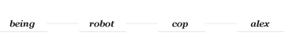
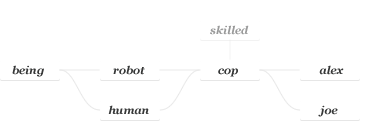
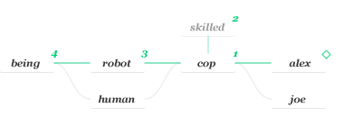
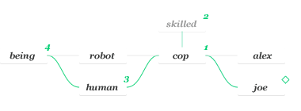

Basic evaluation
Importing the module:
const chain = require('chainchainchain')
Let's consider the following being, human, robot, cop and doc objects.
let being = { is: 'being' }, human = { is: 'human' }, robot = { is: 'robot' }, cop = { is: 'cop' }, doc = { is: 'doc' }
We create the object alex so we can then chain it to cop, robot and being.
let alex = { name: 'alex' }
Now we create a chain. We can make it a separate object however a more useful and elegant way is to assign it as a property of alex.
alex.ch = chain(alex, cop, robot) Ch {}
Let's use our evaluation methods on this new chain object.
chain.is(alex.ch) true
chain.origin(alex.ch) { name: 'alex', ch: Ch {} }
chain.arr(alex.ch) [ { name: 'alex', ch: Ch {} }, { is: 'cop' }, { is: 'robot' } ]
As expected we confirm that we have a chain, that its origin is our object alex and that the whole chain is composed by alex, cop and robot.

If we add being to the chain we get:
chain.add(alex.ch, being) [ { name: 'alex', ch: Ch {} },
{ is: 'cop' },
{ is: 'robot' },
{ is: 'being' } ]

The chain object returns inherited properties like you would expect of an inheritance chain:
alex.ch.name 'alex'
alex.ch.is 'cop'
We got the name property from alex and the is property from cop as it's the youngest chained object with that property. We can get all the is properties of this chain in one method call:
chain.raw(alex.ch, 'is') [ undefined, 'cop', 'robot', 'being' ]
Methods
Methods work as expected:
being.hi = function () {
return 'Hi, my name is ' + this.name + ' and I am a ' + this.is;
}
alex.ch.hi() 'Hi, my name is alex and I am a cop'
The chain inherits the method hi from being and apllies it to itself by default (you can change this setting). The chain object runs the function in its own context, returning this.name from alex and this.is from cop.
Diamond inheritance
Chains are independent from each other:
let joe = { name: 'joe' }
joe.ch = chain(joe, cop, human, being) Ch {}

joe.ch.hi() 'Hi, my name is joe and I am a cop'
alex.ch.hi() 'Hi, my name is alex and I am a cop'
delete cop.is true
joe.ch.hi() 'Hi, my name is joe and I am a human'
alex.ch.hi() 'Hi, my name is alex and I am a robot'
Branching
You can chain chain objects creating complex inheritance trees. Let's replace cop by a new chain containing cop and a new skilled object.
let skilled = {
is: 'skilled',
skill: 'shooting'
}
cop.is = 'cop' 'cop'
let branch = chain(cop, skilled)
chain.rep(alex.ch, cop, branch) [ { name: 'alex', ch: Ch {} },
Ch {},
{ is: 'robot' },
{ is: 'being', hi: [Function] } ]
chain.rep(joe.ch, cop, branch) [ { name: 'joe', ch: Ch {} },
Ch {},
{ is: 'human' },
{ is: 'being', hi: [Function] } ]

alex.ch keeps it's length of 4 objects:

chain.arr(alex.ch).length 4
But we now have access to the skilled object's properties.

alex.ch.skill 'shooting'
alex.ch.is 'cop'
chain.raw(alex.ch, 'is') [ undefined, 'cop', 'robot', 'being' ]
delete cop.is true
chain.raw(alex.ch, 'is') [ undefined, 'skilled', 'robot', 'being' ]
alex.ch.is 'skilled'
The same for joe.ch:

chain.raw(joe.ch, 'is') [ undefined, 'skilled', 'human', 'being' ]
cop.is = 'cop' 'cop'
chain.raw(joe.ch, 'is') [ undefined, 'cop', 'human', 'being' ]
chain.raw(joe.ch, 'is', (props, objs) => console.log(props)) [ undefined, 'cop', 'human', 'being' ]
chain.raw(joe.ch, 'is', (props, objs) => console.log(objs)) [ { name: 'joe', ch: Ch {} }, Ch {}, { is: 'human' }, { is: 'being', hi: [Function] } ]
Changing default behaviour
We can change the way the chain behaves through the chain.set object:
chain.set.owncontext = true true
Binds methods to their corresponding object's context instead of the origin object.
chain.set.uniqueness = true
This setting has been deprecated.
chain.set.allowloops = true true
Allows for inheritance loops when chaining chain objects.
chain.set.setchained = true true
Sets values on the youngest chained object with the existing property instead of the origin.
All values of the set object default to false and are converted to a boolean on attribution.
All of this is independent from the prototypical inheritance scheme, so you can use both tools at the same time to create truly intricate functionalities in your programs at a low cost.